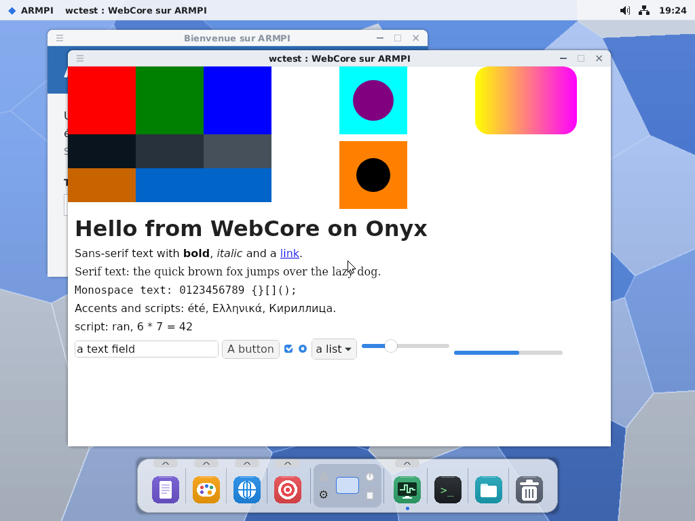
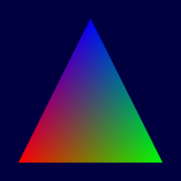
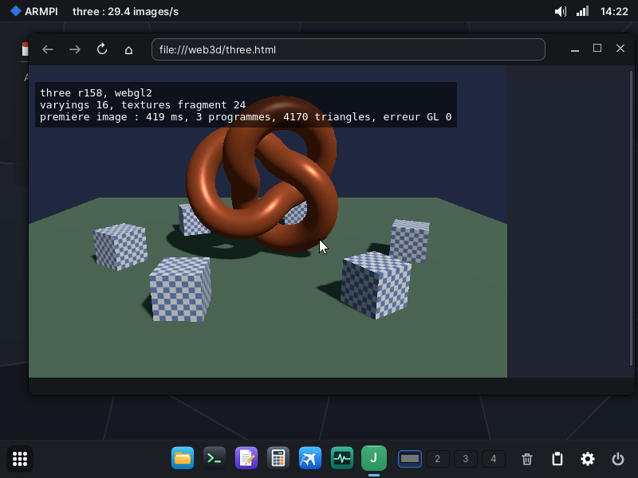

Technical overview · state as of November 2026
Inside Korin OS
A 64-bit operating system for the Raspberry Pi 4, written from a blank page in AArch64 assembly. This page explains how it is built and how we work on it, and says plainly what has been verified and what has not yet.
01What Korin OS is, and what it is not
An experimental system under active development. This page describes the repository as of November 2026.
What it is
- A complete system with its own kernel: memory, isolated processes, scheduler, hardware access
- Written in AArch64 assembly with FASMARM: the kernel, the services, the window server, the core kits and most apps
- Started directly by the Pi firmware, with no intermediate bootloader
- Able to rebuild itself, byte for byte
What it is not
- Not a Linux distribution: no Linux kernel code, no Circle library
- Not an emulator, nor a layer on top of another system
- Not yet a multi-user system, nor one with certified security
- Not yet validated on all of the Pi 4's hardware, nor booted on a Pi 5
Korin OS reuses existing components where they help: WebKit, Mesa, GCC, CoreCLR, SDL, OpenSSL, newlib, the Pi and Wi-Fi chip firmware, fonts. Each keeps its own license (LICENCES.md). Several apps and ideas come from Onyx, an earlier system in C++. Reusing a library does not replace the kernel: it remains Korin OS's own.
02How we work
Korin OS is developed with an AI, Claude Code, as a programming partner. The project owner sets the goals, makes the decisions and validates on hardware; the AI studies, writes the assembly and checks it. Writing a whole system in assembly at this pace would not have been possible otherwise; what keeps it solid is the way the work is done.
The cycle of a project
↺ A failing test sends the work back a step: nothing is checked off until it has run.
The owner
- sets the goals
- settles the architecture
- can replace a plan
- validates on the Pi
The AI
- surveys what the code does today
- compares with other systems
- writes the assembly and the docs
- reports what fails
Scope and limits
- QEMU does not replace the Pi
- CI only checks the boot
selfhostand scripted tests are still run by hand
Test levels
Each level answers a different question. A test under QEMU does not certify a real controller, and a successful boot on the Pi does not certify every application.
| Level | What is checked | Examples |
|---|---|---|
| Assembly | the whole system builds | build.ps1, on every push in CI |
| Boot | expected stages appear on the UART, with no fault | tools/ci/boot_test.py: from kernel to init2 |
| Test programs | one kernel or service mechanism | fstest2, vfstest, pipetest, sigtest, svcfault, threadtest |
| Interface | an app, end to end | tools/qemu_drive.py: clicks, keystrokes, screenshots |
| Guide examples | the developer guide's code compiles | tools/help/check.sh: 99 examples |
| Files | FAT32 and exFAT written correctly | read back by pyfatfs, fsck.exfat and the Linux kernel |
| Self-hosting | the assembly toolchain itself | selfhost: binaries identical to the Windows build |
| Hardware | drivers, throughput, latency | writebench, tcpbench, gputest, on the PocketTerm |
03From the first kernel to WebGL
The major steps, each built on the one before: from the first kernel in assembly to 3D in the browser, through services, the POSIX layer, WebKit and Mesa.
Each step stands on the one before
- 1The kernel in assembly
EL2 → EL1, MMU and caches, exceptions, GIC, 4 cores, preemptive scheduler, framebuffer. Nothing in the hardware requires C.
Unlocks : isolated processes in EL0
- 2Drivers and files
SD card, FAT32 then exFAT, USB, a TCP/IP stack written from the RFCs, WPA2 Wi-Fi, sound.
Unlocks : a usable desktop
- 3The hybrid kernel
Storage, USB, networking, sound and GPU leave the kernel as services; the kernel no longer reads any file.
Unlocks : drivers that can fail without taking the system down
- 4Self-hosting
FASMARM, 57,000 lines of x86 assembly, ported to AArch64: on Korin OS it reassembles the kernel identically.
Unlocks : a system that rebuilds itself
- 5The POSIX layer and libc
libposix, about 9,000 lines of C taken from Onyx, on newlib 4.4, with a GCC 14.2 toolchain. The kernel gains what it needs:mmap, copy-on-write, threads, signals.Unlocks : existing C and C++
- 6The base libraries
ICU, Skia, HarfBuzz, FreeType, curl, libxml2, SQLite, libpng, libjpeg-turbo, OpenSSL… built on
libposix.Unlocks : a web engine
- 7WebKit
JavaScriptCore, then WebCore, then WebKit2 and its processes (UI, web, network). The Jet browser presents its pages in an Elegant attached surface.
Unlocks : the Web, over https

- 8The GPU and Mesa
A
v3dservice outside the kernel, then Mesa 26.2: the Galliumv3ddriver, the NIR-to-QPU compiler. A pixel-exact triangle, then Skia Ganesh at 0.66 ms per frame instead of 1.48 ms.Unlocks : OpenGL ES 3.0 for apps

- 9WebGL
ANGLE on Mesa inside Jet's WebKit: WebGL 2 on the real GPU, 59 frames/s on a three.js scene with PBR and shadows. GlKit then shares a single copy of Mesa across apps.
Unlocks : 3D in the browser, accelerated Skia and Avalonia

Scope and limits
- WebKit, Mesa and GCC are built in WSL, not on the Pi: they are the exceptions to self-hosting.
- The port started by adapting only Onyx's glue: WebKit's patch series applies as is.
04Architecture
A hybrid kernel, in the sense of Windows NT or XNU: the kernel keeps what must be fast or safe (memory, scheduler, IPC), and everything else runs as isolated services that a crash does not take down with the system. Drivers and the window server live in user space.
LettersSheetJet (WebKit)terminalgccdotnetemulators…AppKitUIKitNetKitAudioKitMediaKitGlKitBusKitDocumentKitnewlibinit2hwmanagervfsfatfssdusbdnetdwifisoundhidmanagerbusdElegantMMU + ASIDSMP schedulerthreads, futexnamed servicesIRQsignalsELF images4 × Cortex-A72GIC-400SDHCIDWC2 + xHCIGENETCYW43455V3DThe kernel reads no files: paths, descriptors, pipes and loading executables belong to AppKit and the file services. It keeps only mechanisms, which is how it fits in 76 KB.
05From power on to the desktop
Each step has one owner, and the kernel starts a single program. Times come from the log, measured on the PocketTerm on 5 November 2026.
- FirmwareThe VideoCore loads
kernel8.imgat0x80000; core 0 starts in EL2, cores 1 to 3 wait in the spin table. Time spent here does not show in the log. - Kernel entryEL2 → EL1, exception vectors, UART, memory reported by the mailbox and the DTB, framebuffer, MMU and caches.
- System corePage allocator, GIC-400, 1 kHz timer per core, the three other cores woken up. Kernel ready: 0.26 s.
- init and initramfsThe only program the kernel starts. It serves
SD0:through the services and hands over toinit2: 0.28 s. - init2 and hwmanager
init2starts the services and restarts them if they fail.hwmanagerdetects hardware (I2C, USB, SoC) and starts the driver listed indrivers.txt. - DesktopElegant takes the screen at 0.95 s, the desktop is ready at 1.4 s. Wi-Fi is connected around 9.5 s, then DHCP and the clock.
Since the kernel started, in seconds
The initramfs
Loaded by the firmware together with the kernel, it holds just enough to serve SD0: before any other service:
Scope and limits
- Firmware time (EEPROM,
start4.elf) is not in the log: it is timed with a stopwatch. - Wi-Fi and DHCP were moved earlier after this measurement: to be measured again on the Pi.
Reaching the desktop once does not prove everything boots: CI fails as soon as an expected stage is missing, a kernel exception appears or a program is killed during boot.
06The build pipeline
Two levels: the assembly, which builds on Windows in a few minutes, and the large C, C++ and .NET ports, built in WSL.
Sources
- AArch64 assembly: kernel, services, kits, apps
- C, C++: ports, office suite
- C#: .NET apps
- Resources: fonts, icons, help, languages
Tools
- FASMARM, on Windows or Korin OS
- build.ps1, build.bat: one program per folder
- WSL: cross GCC, CMake, Ninja
- mkrepo: signed packages
Outputs
kernel8.img,kernel_2712.img- the initramfs modules
sdroot,sd.img, the minimal card- the package repository
One source, two boards
The self-hosting loop
Scope and limits
- C/C++ ports need WSL: several hours and about sixty GB. CI does not rebuild them, it uses what is in
prebuilt/.
07The kernel
19,000 lines of assembly. What it keeps is what must be fast or safe.
Launching a program
- ReadAppKit reads the ELF64 straight into the pages of an image
- Sealimage kept for later launches
- Spacenew address space and ASID; shared code, copy-on-write data
- Startmain thread, 256 KB stack
Physical memory
0xFC00_0000Peripheralsregisters, uncached≥ 4 GoHigh zone8 GB Pi 4≥ 1 GoHigh zoneprocesses, kits, images< 1 GoLow zoneDMA, hardware buffers0x8_0000Kernel76 KB, sees all of RAMA process address space
0x7F_FFFF_0000Stack256 KB0x78_…Registers, DMAdrivers only0x68_…Surfacesshared buffers0x58_…VM_MAPmmap0x50_…Kits.so0x40_…Code, heapsbrkA system call
- Hardware calls (0x40) require a program from
SD0:/sys
A fault
- A failed service is restarted by
init2, at most three times
Scope and limits
- Isolating processes does not make drivers safe: a service in
SD0:/syscan reach the hardware it asks for. - A kernel fault is still fatal, except on a lazy or copy-on-write page.
- No accounts or per-service rights yet: see the Security section.
Thread states
- Readyrunnable, or running
- Sleepinguntil a deadline
- Blockedfutex, join, waiting on a service
- Deadreclaimed later
One scheduler per core
- IPI (SGI 0) to wake another core
Three priorities
- normal, high, soft real-time
- aging: no ready thread waits forever
FP/NEON context
- first use trapped, registers cleared
- then q0–q31, FPCR, FPSR saved on each switch
- only for threads that use them
Scope and limits
- No hard real time.
- A service handles requests in arrival order, without priority inheritance (planned).
- A slow service slows its clients down, even when their code is correct.
Named services
- 512-byte messages, no allocation
- Caller's pid written by the kernel
- 6 µs round trip on the Pi 4
- Caller memory mapped, no copy
Interrupts
- GIC-400, IRQs delivered to user-space drivers
- Elegant's DMA, V3D, sound, GENET, Wi-Fi, touch
- Shared lines (
IRQ_SHARED)
POSIX signals
- Faults with
si_addr, writableucontext sigaltstack, per-thread masks,SIGCHLDmembarrier: what CoreCLR needs
System calls
Numbered by domain on the leading hex digit, with no gaps inside a range. The single list is
src/inc/syscalls.inc, included by both the kernel and the programs.
| Range | Domain | Examples |
|---|---|---|
| 0x00 | Memory | SBRK, VM_MAP, BUF_CREATE, DMA_ALLOC |
| 0x10 | Processes, time | launching an image, wait, clock |
| 0x20 | Threads, futexes | create, join, priority, kill |
| 0x30 | IPC | SVC_OPEN, SVC_CALL, SVC_SIGNAL |
| 0x40 | Hardware (SD0:/sys only) | dev_map, fw_call, IRQ |
| 0x50 | Window server | shared buffers, requests, events |
| 0x60 | System | log, randomness, kits |
| 0x80 | Files (AppKit) | served in user space, not by the kernel |
08Services
Ordinary processes in SD0:/sys/svc, with rights on the hardware. They are called by name;
programs also notify each other through topics on an event bus (busd), in the style of D-Bus.
The path of a file read
- 64 KB and more: data goes from the card to the program's memory with no copy (
SVC_MAP_CALLER); below that, through a shared buffer
Event bus
BUS_RETAIN: a late subscriber gets the current state- 128 topics, 256 subscriptions
Supervision
- BusKit reopens the channel on its own; publishers republish their state
Scope and limits
- Any program can still open any service; per-channel rights are planned (Security section).
| Area | Services | Role |
|---|---|---|
| Boot | init, init2, hwmanager | startup, supervision and restart, plug-and-play detection |
| Files | vfs, fatfs, ramfs, sd, usbstorage | SD0: and USB0: volumes, FAT32, exFAT, RAM disks, ADMA2 DMA |
| USB | usbd, usbkeyboard, usbmouse, usbgamepad, usbnet, usbaudio | DWC2 and xHCI controllers, hot plug, one driver per class |
| Input | hidmanager, gt911 | all keyboards, mice and touch screens merged, keyboard layouts |
| Network | netd, genet, wifi, telnetd, ftpd, vncd, rdpd | home-made TCP/IP stack (NewReno, window scaling), remote access servers |
| Sound | sound, pwmaudio, hdmiaudio, i2smic | mixer, jack, HDMI and USB outputs, microphone |
| GPU | v3d | the Pi's GPU, for Mesa |
| Desktop | Elegant, menubar, notifyd, pkgd, printd | windows, menu bar, notifications, packages, printing |
A service that stops on an error is restarted by init2, at most three times. Clients get
E_PIPE and reopen the channel; BusKit does it on its own.
09Writing an application
A native app is written in assembly or C/C++ and builds on the kits. It never touches the hardware directly.
The kits
AppKit (files, launching), UIKit (windows, controls, themes), NetKit, AudioKit, MediaKit, GlKit, BusKit, DocumentKit, PrinterKit… Each kit has C headers.
An app's loop
It receives its events (keyboard, mouse, bus) in a 64-entry queue, updates its model, draws into its surface and tells Elegant which area changed.
The manifest
app.txt gives the name, category, description, keywords and usage tips. The launcher and the PocketQI assistant both use it.
The developer guide
In the system, under the Help menu: one page per kit, plus the app, service, IPC and libc. Its examples are compiled on every check.
A skeleton
A minimal app to copy as a starting point, which pibuild compiles on Korin OS.
Help and languages
help_fr.md and help_en.md next to the app are enough: the Help menu appears on its own. UI strings are translated through language files.
10Drivers and hardware
The reference machine is a Waveshare PocketTerm35: a Pi 4 with a 3.5-inch touch screen and a keyboard. A driver that exists, a driver that assembles, a detected device and an end-to-end workflow are different levels: each one's state is stated plainly.
The plug-and-play chain
All input in one place
Example: the PocketTerm touch screen
- hwmanagersees
i2c1:5dand startsgt911 - gt911woken by INT on GPIO 4, idle otherwise
- HIDManagerreceives absolute pointer events
- Eleganttap = click, drag = scroll
Scope and limits
- Present, assembled, detected, usable end to end: four different levels. The table below says which one each driver reaches.
| Hardware | Driver | State |
|---|---|---|
| SD card (SDHCI) | sd: PIO, then ADMA2 with interrupt on completion | Pi |
| USB-C (DWC2) | usbd: keyboards, mice, USB sticks | Pi |
| GT911 touch screen | gt911: software I2C on GPIO, IRQ on GPIO 4 | Pi |
| CYW43455 Wi-Fi | wifi: SDIO, firmware, WPA2, 2.4 and 5 GHz | Pi |
| V3D GPU | v3d + Mesa: OpenGL ES 3.0 | Pi |
| USB audio | usbaudio: UAC1, isochronous | QEMU |
| USB Ethernet | usbnet: CDC-ECM | QEMU |
| USB-A (PCIe + VL805) | usbd: xHCI | to try |
| GENET Ethernet | genet: IRQ, DMA | to try |
| Jack, HDMI sound, I2S microphone | pwmaudio, hdmiaudio, i2smic | to try |
| Raspberry Pi 5 (BCM2712 + RP1) | boot, UART, GPIO, MMU | to try |
Hardware is discovered through the firmware mailbox, the DTB, I2C and USB enumeration. hwmanager maps each detection to a driver
(i2c1:5d = SD0:/sys/svc/gt911); plugging a device in starts its driver, unplugging stops it.
11Debugging, with or without a cable
When the screen stays black, you need to see what the system says before the desktop exists.
The serial link
The kernel console goes out on the PL011 UART from the very first instructions. On the Pi 5, that is the 3-pin debug connector.
Without a cable
With journal in startup.txt, the kernel's timestamped log is written to SD0:/journal.txt after 20 s, then 60 s.
Diagnostic keys
F12: locks, cores, threads and their kernel call stacks. F11: Elegant's windows and last 64 events. F10: recompose everything.
Isolating a driver
options.txt turns them off one at a time: no_wifi, no_gpu, no_irq, no_sd_dma, no_highmem… To tell one cause from another.
An address, a name
tools/fas_sym.py finds the label of a faulting address from FASMARM's symbols.
Replaying a failure
When CI fails, it keeps the UART log, the kernels, the initramfs and the card image, to replay the boot locally.
12Graphics
The window server is a program like any other. Without it, the kernel's text console keeps the screen.
CPU path
GPU path
What keeps it light
- asynchronous updates
WEV_FRAME: the app knows when the image was taken- only damaged areas are recomposed
- 2D DMA rather than the CPU
Diagnostics
- F11: windows and last 64 events
- F10: recompose everything
no_dispdma: CPU copy instead
Scope and limits
- The GPU only speeds up apps that go through OpenGL ES; the rest is drawn by the CPU.
- One surface per window: one visible 3D view per window.
13Ported software
The core is in assembly, but Korin OS does not rule out C, C++ or C#. A POSIX layer
(newlib, threads, files, sockets, mmap, signals) is there to port what already exists.
Build on the device
GCC, G++, binutils and make run on Korin OS. So does FASMARM, which reassembles the kernel identically.
The Web
Jet is built on WebKit, with OpenSSL for TLS and WebGL on the GPU.
.NET
CoreCLR from .NET 10, the C# compiler, Windows Forms and Avalonia; a Studio to write apps.
Media
MediaKit: WebM and MP4, in VP8, VP9 and AV1. AudioKit: Opus, mixing, recording.
Games
SDL ported: SuperTux, SuperTuxKart, and emulators from the NES to the 3DS.
Packages
pkg and the Software app install from a signed repository; the minimal card is 30 MB.
Porting an engine is only part of the job: it also needs access to files, clocks, threads and the network. That is what the POSIX layer and the kernel's signals had to provide, for CoreCLR in particular.
14AI inside the system: PocketQI
Two uses of AI not to confuse: Claude Code helps develop Korin OS from the PC; PocketQI helps the user, inside the system. The first is not a dependency of the system.
What it does
From the menu bar, you ask it in writing how to use the system or an app. It answers in a bubble and can open the app in question.
Where its knowledge comes from
The app.txt manifests of the installed apps: description, keywords, tips checked against their menus. The three apps closest to the question get all their tips in the prompt.
Online or offline
Answers come from a service chosen in its settings (Mistral, Groq or your own server) or, offline, from the manifests themselves.
PocketQI does nothing beyond opening an app: it does not change files, install anything or control hardware. It does not listen: no microphone, no wake word.
15Some measurements
Taken on the PocketTerm (Pi 4) during the optimization work, with the earlier value where there is one.
| Measurement | Value | Context |
|---|---|---|
| Kernel to desktop | 1.4 s | log of 5 November 2026, firmware time excluded |
| Service call round trip | 6 µs | kernel IPC, between two processes |
| Wi-Fi throughput | 5.8 – 7.6 MB/s | 0.7 MB/s before, SDIO bus at 50 MHz |
| Writing a new file (FAT32) | 6.4 – 7.1 MB/s | 0.23 to 0.29 MB/s before writes were batched |
| Rewriting in place | 11.3 – 11.7 MB/s | 2.47 MB/s before |
| CPU used by the SD card | ÷ 40 to 130 | ADMA2 DMA instead of PIO; same throughput, limited by the 50 MHz bus |
| Network stack at idle | 0.7 % | of one core: netd sleeps until a frame arrives |
16Security, today and next
The foundations are there; the complete model is not yet. Here are both, without rounding up.
What exists
- Isolated processes: one address space and one ASID each, pointers checked by the kernel
- Hardware access (
dev_map, DMA, IRQ) reserved for programs inSD0:/sys - Caller's pid written by the kernel into every service request
- Packages signed with ECDSA P-256, each archive checked by its SHA-256
- TLS through OpenSSL for the browser, mail and packages
What is missing
- A single account: no users or roles yet
- Any program can open any service, block devices included
- No private data per application yet
- No per-process request quotas
The plan is written down (docs/IPC.md, in French): per-process channels,
service access levels, caller identity from its executable's path, a private data/ folder for each app, and a secrets service
that keeps credentials and never hands them to apps. These are future projects, not features available today.
17Roadmap
The next projects. Details are in docs/FEUILLE-DE-ROUTE.md, in French.
- HardwareValidate on the Pi: GENET Ethernet, the USB-A ports, jack and HDMI sound, the I2S microphone.
- Raspberry Pi 5First boot on a real board with a serial cable, then the drivers for the RP1 chip.
- SecurityAccess rights on services, private data for each application, a secrets service.
- CIRun
selfhostand the scripted tests in CI, not just the boot. - DesktopKeep growing the office suite, the .NET apps and the built-in help.
18Frequent questions
Does Korin OS use the Linux kernel?
No. The kernel is Korin OS's own, written in assembly. The Pi firmware loads it directly, with no intermediate bootloader or kernel. Ported libraries (WebKit, Mesa, GCC…) come from elsewhere and keep their licenses.
Is it really all assembly?
The kernel, the services, the window server, the core kits and most apps, yes. The large ported programs (browser, compilers, .NET, office suite, emulators) are in C, C++ or C#, on top of the POSIX layer.
Can it run Linux or Windows programs?
Not their binaries. A program that follows POSIX can however be recompiled for Korin OS, even on the Pi itself with GCC.
Does it run on a PC or a Pi 5?
Not on a PC: only the Pi's AArch64 is targeted; testing happens in QEMU, which emulates a Pi 4. The Pi 5 builds from the same source but has never booted on a real board yet.
Did the AI write it on its own?
No. The project owner sets the goals, decides the architecture, reviews the studies and validates on hardware. The AI studies, writes and checks, and what it claims has to pass the tests.
Are all apps GPU-accelerated?
No. Only those going through OpenGL ES (GlKit, WebGL, Skia, 3D emulators) use the GPU. The rest is drawn by the CPU.
Can I install it today?
Yes, on a Pi 4, with the 30 MB minimal card and then the package manager. But it is an experimental system: some hardware is still to be validated, and there are no user accounts yet.
19Glossary
| Term | What it means here |
|---|---|
| Kernel | The privileged core: memory, execution, interrupts, hardware access. |
| EL0, EL1, EL2 | ARM privilege levels: programs in EL0, the kernel in EL1, the hypervisor in EL2, which Korin OS leaves at boot. |
| ASID | A process's address-space number, which avoids flushing the translation cache on every switch. |
| Service | A process in SD0:/sys/svc offering a named service to others: files, network, sound, a driver. |
| Kit | A shared library in SD0:/lib, loaded once and mapped into each process that uses it. |
| IPC | Communication between processes: here, 512-byte messages sent to a service by name. |
| System call | A request from a program to the kernel, through the svc #0 instruction. |
| DMA | A transfer done by hardware straight into memory, without the CPU. |
| Copy-on-write | Pages shared while they are only read, copied on the first write. |
| Futex | A wait on a word of memory, the basis of thread locks. |
| Self-hosting | The system rebuilds itself with its own tools. |
| Regression | Something that used to work and no longer does after a change. |